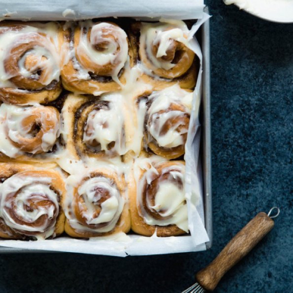

The Best Cinnamon Rolls You’ll Ever Eat
Home


4.96 from 1522 votes
Author: Monique Volz | Total Time: 2 Hrs 20 Mins | Yield: 9 Servings
The BEST cinnamon rolls in the WORLD. Big, fluffy, soft and absolutely delicious. You’ll never go back to any other recipe once you try this one! This cinnamon roll recipe includes options to make them overnight or ahead of time and even freeze them.
This cinnamon roll recipe doesn't require a ton of ingredients, but it does require love, patience and dedication to the true recipe — meaning don't deter from the original! These are called the best cinnamon rolls for a reason, and that requires following the recipe as instructed.
Ingredients
- 3/4 cup warm milk (whole milk or 2% preferred) (110 degrees F)
- 2 1/4 tsp quick rise or active yeast (1/4-ounce package yeast)
- 1/4 cup granulated sugar
- 1 egg plus 1 egg yolk, at room temperature
- 1/4 cup butter, melted (I prefer salted, but unsalted works, too)
- 3 cups bread flour, plus more for dusting
- 3/4 tsp salt
- 2/3 cup dark brown sugar (light brown sugar also works)
- 1 1/2 Tbsp ground cinnamon
- 1/4 cup butter, softened
- 4 oz cream cheese, softened
- 3 Tbsp butter, softened
- 3/4 cup powdered sugar
- 1/2 tsp vanilla extract
Instructions
- Warm milk to around 110 degrees F. I like to do this by placing milk in a microwave safe bowl and microwaving it for 40-45 seconds. It should be like warm bath water. Transfer warm milk to the bowl of an electric mixer and sprinkle yeast on top. Add in sugar, egg, egg yolk and melted butter. Mix until well combined. Next stir in flour and salt with a wooden spoon until a dough begins to form.
- Place dough hook on stand mixer and knead dough on medium speed for 8 minutes. Dough should form into a nice ball and be slightly sticky. If it's TOO sticky (meaning it's sticking to the bottom of the mixer, add in 2 tablespoons more bread flour.) If you don't want to use an electric mixer, you can use your hands to knead the dough for 8-10 minutes on a well-floured surface.
- Transfer dough ball to a well-oiled bowl, cover with plastic wrap and a warm towel. Allow dough to rise for 1 hour to 1 ½ hours, or until doubled in size. This may more or less time depending the humidity and temperature in your home.
- After dough has doubled in size, transfer dough to a well-floured surface and roll out into a 14x9 inch rectangle. Spread softened butter over dough, leaving a ¼ inch margin at the far side of the dough.
- In a small bowl, mix together brown sugar and cinnamon. Use your hands to sprinkle mixture over the buttered dough, then rub the brown sugar mixture into the butter.
- Tightly roll dough up, starting from the 9-inch side and place seam side down making sure to seal the edges of the dough as best you can. You will probably need to cut off about an inch off the ends of the dough as the ends won't be as full of cinnamon sugar as we'd want it to be.
- Cut into 1 inch sections with a serrated knife or floss. You should get 9 large pieces.
- Place cinnamon rolls in a greased 9x9 inch baking pan or round 9 inch cake pan. (I also recommend lining the pan with parchment paper as well, in case any of the filling ends up leaking out.) Cover with plastic wrap and a warm towel and let rise again for 30-45 minutes.
- Preheat oven to 350 degrees F. Remove plastic wrap and towel and bake cinnamon rolls for 20-25 minutes or until just slightly golden brown on the edges. You want to underbake them a little so they stay soft in the middle, that’s why we want them just slightly golden brown. Allow them to cool for 5-10 minutes before frosting. Makes 9 cinnamon rolls.
- To make the frosting: In the bowl of an electric mixer, combine cream cheese, butter, powdered sugar and vanilla extract. Beat until smooth and fluffy. Spread over cinnamon rolls and serve immediately. Enjoy!